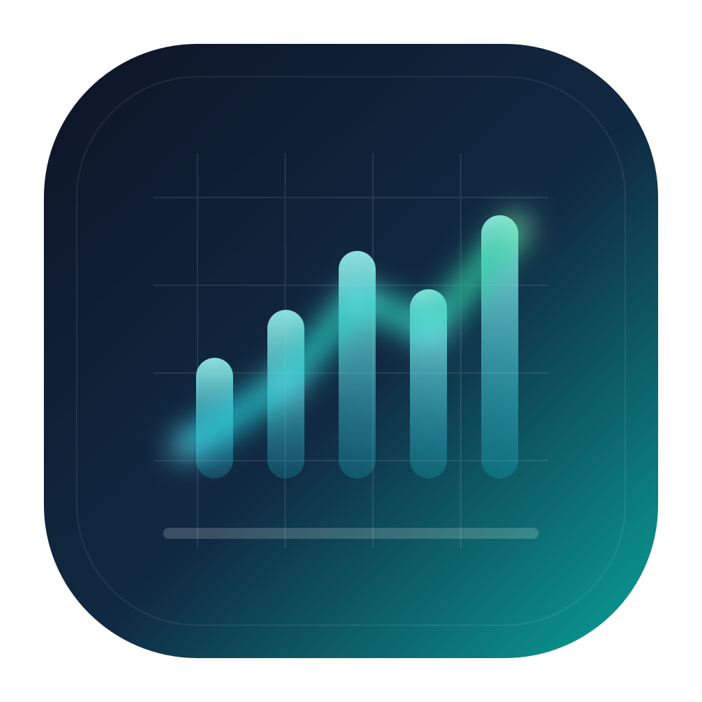

Home
OverviewProduct overview, highlight-level watch summary, and runtime posture.

AppID wx1d02a932c4f9a4ae · TradingAgentsMiniImportShell
当前证据仅覆盖已提交的 Mini 导入壳配置与本地源码/构建结果；默认运行时仍是占位预览目标，不代表真实微信运行时、真机、上传或线上后端验证。
当前 mini/ 仅验证可导入的壳层配置与本地源码/构建产物，不代表真实微信模拟器、真机、上传或线上运行时成功。
Evidence source: mini/ source-build import shell preview with a placeholder-safe runtime default.
shared config: mini/config/runtime.shared.js
local override: mini/config/runtime.local.js
private DevTools config: mini/project.private.config.json
Generated from the committed mini/ source tree. This is not evidence of real WeChat simulator, device, upload, or runtime success.
Home stays overview-first, Watch owns the protected read path, and Account owns identity and support navigation.
Product overview, highlight-level watch summary, and runtime posture.
Primary protected digest surface for auth-required, loading, waiting, ready, and authenticated-empty states.
Identity state plus entry to Settings, About, Privacy, and Help.
Home stays overview-first
Home frames the Mini product, preview posture, and a single highlight-level summary. Full protected digest detail stays in Watch.
Signed out, but the shell remains usable
Home and Account remain public. Watch keeps the auth gate and protected digest surface.
Signed-out users can still review the shell posture here, then move into Watch for the protected digest flow.
Signed in as mini-preview
Home keeps the persisted session signed in while it refreshes the Watch overview for a concise highlight.
Until Watch responds, Home avoids signed-out copy and waits to summarize the protected digest surface honestly.
概览仍在刷新中；请稍候或前往 Watch 查看受保护摘要状态。
Signed in as mini-preview
The persisted bearer session is ready, but Watch returned zero protected digest cards. Home keeps this authenticated-empty overview distinct from signed-out copy.
Home keeps authenticated-empty distinct so Account and Home stay aligned when Watch has zero protected cards.
当前会话已登录，但 Watch 还没有可展示的受保护摘要高亮；请前往 Watch 查看空态说明。
Signed in as mini-preview
The persisted bearer session is still active, but the Watch overview is temporarily unavailable. Home keeps the signed-in posture honest instead of falling back to signed-out copy.
Home treats a temporary digest read failure differently from both authenticated-empty and signed-out states.
摘要概览暂时不可用，因此 Home 不会伪造高亮卡片；请前往 Watch 重新尝试。
Signed in as mini-preview
Home shows a concise watch summary and one highlight, while Watch continues to own the full protected digest experience.
Home keeps this highlight concise so the detailed protected card stack stays in Watch.
贵州茅台 · 600519
认证成功后的本地预览卡片：即便存在更新更晚的等待态重复行，也优先显示 ready digest 内容。
A股 · 主板 · SSE
Watch owns the protected read path
Watch is the only primary surface that handles sign-in, auth-required gating, and the full protected digest list.
Signed-out navigation remains usable on Home and Account while Watch keeps auth-required, loading, waiting, ready, and authenticated-empty states distinct and aligned with the manual-upload preflight truth boundary.
Watch 正在准备受保护盯盘视图
Watch 会先检查 Bearer 会话与受保护 digest 读取结果，再决定显示登录入口、等待态卡片或已就绪摘要。
Until the contract check finishes, Watch does not reveal protected cards or reuse stale content from a previous session.
cards 0 · ready 0 · waiting 0
登录后即可查看 Watch
当前未检测到可用 Bearer 会话，因此 Watch 会继续保持受保护状态，不显示任何受保护盯盘卡片。
No protected digest cards render until a valid bearer session unlocks the shared `/api/watch/digests` contract.
cards 0 · ready 0 · waiting 0
已登录，但 Watch 暂无受保护摘要
当前会话已经通过认证，但还没有可展示的受保护摘要卡片；这与未登录或加载中不同，也不会回退到 Home 的概览内容。
Watch stays unlocked for this session, but it does not fabricate cards from Home or any mock source.
cards 0 · ready 0 · waiting 0
已登录，Watch 正等待摘要完成
当前受保护 watch 成员仍在等待 digest 完成；Watch 会继续展示等待态卡片，而不是把页面误判为空白或伪成功。
Waiting stays distinct from authenticated-empty so pending protected members are not dropped or collapsed into a blank state.
cards 1 · ready 0 · waiting 1
已登录，Watch 已准备好受保护摘要
Watch 当前展示 1 张已就绪摘要卡片，并保留 1 张等待态卡片，避免遗漏仍在排队的受保护成员。
Watch prefers ready digest content over duplicate placeholder rows for the same canonical `stock_code` without leaking extra fields.
cards 2 · ready 1 · waiting 1
blank_credentials
用户名和密码不能为空
invalid_credentials
用户名或密码错误
missing_fields
body.username: Field required
Ready preview payload contained 3 digest rows and rendered 2 visible cards for canonical stock_code values: 600519, 000001.
Ready digest content wins over duplicate placeholder rows for the same canonical stock_code, even when the placeholder row is newer by timestamp.
Placeholder/waiting-state cards remain visible after dedupe when no ready digest exists, so pending watched stocks are not dropped from Watch.
The Watch mapping consumes only compact digest-card fields and does not require report bodies, browser routes, or runtime-specific context.
Watch keeps signed-in waiting cards visible when no ready digest exists yet, so authenticated-empty and waiting never collapse together.
A股 · 主板 · SZSE
等待态仍来自受保护 digest 读取结果，而不是未认证时的假成功空列表。
A股 · 主板 · SSE
认证成功后的本地预览卡片：即便存在更新更晚的等待态重复行，也优先显示 ready digest 内容。
A股 · 主板 · SZSE
等待态仍来自受保护 digest 读取结果，而不是未认证时的假成功空列表。
Account owns identity and support navigation
Account shows session state and routes into Settings, About, Privacy, and Help without trapping users on a dead leaf page.
Account remains available before sign-in
Use Watch to sign in, then return here for session actions and legal/help pages.
Account session is ready · mini-preview · user-preview-1
Identity state lives here while detailed protected digests continue to belong to Watch.
Shell preferences, notification posture, and runtime-boundary reminders.
Account → Settings → Account
Mini product positioning, shell responsibilities, and delivery scope.
Account → About → Account
Privacy posture for bearer-session auth and deferred runtime boundaries.
Account → Privacy → Account
Support paths, sign-in guidance, and deferred operator/runtime next steps.
Account → Help → Account
Each page supports a usable in-app round trip such as Account → Settings → Account.
Settings collects lightweight preferences and boundary reminders without pretending that checked-in preview defaults or offline preflight evidence are a live operator runtime.
Round-trip path: Account → Settings → Account.
About keeps the publish-facing product framing concise while still admitting that source/build proof and manual-upload preflight are not the same as real WeChat runtime, upload, or live backend success.
Round-trip path: Account → About → Account.
Privacy focuses on the JWT login reuse path, local bearer-session storage, and the fact that the checked-in runtime target is still a placeholder preview endpoint until operator-local runtime and upload inputs exist.
Round-trip path: Account → Privacy → Account.
Help keeps the shell usable by routing sign-in questions toward Watch and release/runtime questions toward the checked-in manual-upload handoff plus later operator-controlled steps.
Round-trip path: Account → Help → Account.
离线 preflight 仅验证已提交的 Mini 身份、占位运行时边界、checked-in handoff 材料与本地私有文件卫生；它不证明真实微信运行时、线上后端可达性、代码上传、审核通过或最终发布完成。
The shell visual system keeps objective dark-premium cues across primary surfaces: dark root backgrounds, restrained green accents for active navigation and primary actions, elevated cards, and consistent spacing/typography.